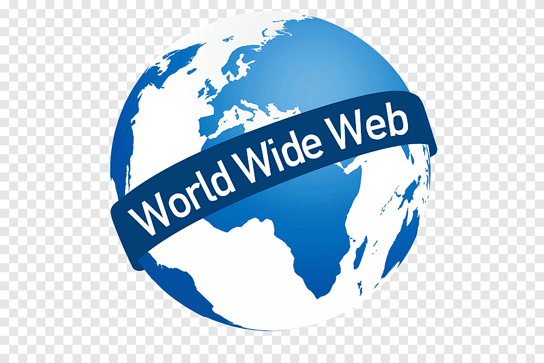
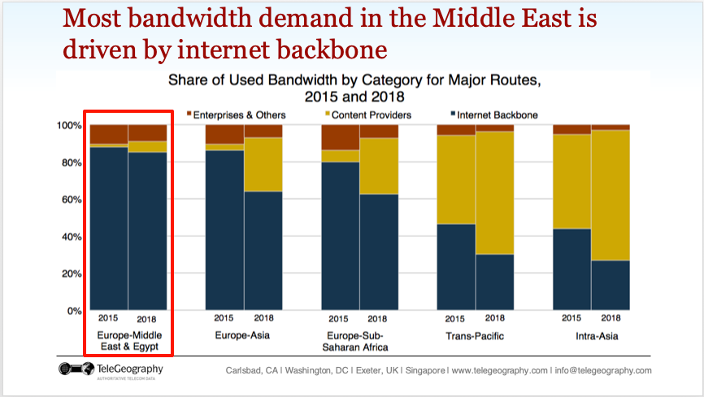

Everyone has seen www. in the URL of any website, however what does it stand for, and how did it begin?
WWW stands for the World Wide Web, which CERN(Conseil Européen pour la Recherche Nucléaire) tasked , in 1989, Tim
Burners Lee to create. The original goal of this application was to allow for convenient and easy communication
between the various research teams using different operating systems such as MS-DOS and Unix, however, this
project
blew up far beyond the imagination of anyone at the time. (W3C, Tim-Burners-Lee ) [1]
After the creation of the World Wide Web, Tim Burners Lee created the first browser in 1990 called ‘WorldWideWeb’
which allowed WSIWYG (What you See Is What You Get), which was phenomenal at the time, as well as easy access to
images.
The creation of this browser started a gigantic wave of browsers, from Lynx to ViolaWWW, with one very noteworthy
browser known as Mosaic. Mosaic is the very first graphical browser which opened the floodgates for the evolution
of
the web and allowed for further growth, it was created by Eric Bina and Marc Andreessen, the latter of whom later
co-founded Netscape to help publicize Mosaic (internally known as Mozilla) and became a giant in the industry for
years to come, and even to this day Mozilla Firefox remains among the more memorable browsers despite Google
Chrome’s clear dominance.

What about the present?
In the present, the WWW has a whopping 5.45 billion users, exceeding half of humanity, according to DataReportal.
(DataReportal)
[2]
This is a number of users that would not have been conceivable when the WWW was created and it proves the
spectacular success of Tim Burners Lee’s project, as a matter of fact in the present day there exists not a soul
who
has not heard of the internet and the web.
Meanwhile, on the technical side of the evolution of the web, from the initial creation and explosion of the web
there were 2 new versions of the web.
Web 2.0:
This is a new version of the web coined by Darcy Dinucci in 1999 which emphasized ease of use as well as user
generated content, and this version of the web is responsible for a major element of our current daily lives,
social
media and its various applications such as Facebook or Youtube. (Wikipedia) [3]
Web 3.0:
While this version of the web didn’t bring as fundamental of a change to users of the web like 2.0 did, it
fundamentally changed how the web itself works whereby instead of numbers, the usage of AI technology and Machine
Learning has allowed for the internet to comprehend data by keywords and data similar to a regular human being,
another important aspect of Web 3.0 is the blockchain which witnessed an explosive growth in the time period
between
2016 and 2020.
Browsers:
Browsers:
On the browser side we have seen Google Chrome gradually cement its place as the giant of the industry starting
with
6.5% users upon release in 2009 and reaching 42.9 in a mere 3 years in 2012, and this exponential growth continued
till it reached 80% in July 2017 and has been mostly stable around there to this day with the closest competitor
being Microsoft Edge with 10% users, which is in no small
part due to Microsoft pushing it on its OS.
However , how about Google Chrome?
The success of Google Chrome can be attributed to several factors, with 3 major ones being ,first, the freedom to
use various kinds of expansions for the browser which allowed for levels of convenience inconceivable without
,second , its speed, at the time of release Google Chrome set a new standard for browsing speed thanks to the
usage
of WebKit rendering engine known for its speed, and last but not least it’s user friendly UI that dealt away with
all unnecessary bloat on the home page allowing for even the most inexperienced users to use it with little
trouble.
(W3C Browsers) [4]
Future expectations:
The future possibilities and expectations of the World Wide Web cannot be discussed without the mention of the
concept of IoT(internet of things).
IoT aims to eventually achieve a world where every single action is connected to the internet and nothing can be
done outside of its boundaries, this has not been possible yet due to the importance of functions such as the
landline and regular cellular communication in the case of network instability to guarantee reliable means of
communication.
Another important thing to discuss when it comes to future development is the concepts of AR and VR which we
already
have seen initial prototypes of with the Meta VR headset (known as the Meta Quest). These technologies might
become
integrated with the web allowing for one to surf the internet through the metaverse (which some CEOs such as Mark
Zuckerberg consider the future of the internet) providing a whole new experience never thought
possible.(Wired-Metaverse)[5]
Another interesting possibility is the decentralization of platforms, whereby a user can create a new Passport,
for
example, through the simple click of a button on the web. And of course, this comes with its own set of security
developments such as facial recognition and the storage of biometric data on the web which could and will lead to
issues without the proper protection.
Security Issues:
Security is the most important requirement for the internet to be functional, for an internet with no security
leads
to far more issues than it solves, these security issues can be of various causes such as weak authentication ,
insecure APIs, ransom and malware which are especially prevalent with phishing.
Weak Authentication:
A recent example of a calamity almost caused by weak authentication is an incident that occurred with COX ,
whereby
Sam Curry (an American ethical hacker and bug bounty hunter) was testing for an XXE vulnerability on his network
and
received input from an unknown IP address, thus he decided to test why this occurred and realized his router was
compromised and decided to replace it with a new one. However, the story does not end there, he wanted to know why
and how his router was compromised and so he went to cox website and realized a fatal error, one of the servers
authentication was malfunctioning and allowed for an empty input authorization, moreover this empty input allowed
for administrator access to the server and all of the database including the personal information of even FBI
agents, moreover the weak or rather lack of authentication allowing for administrator access from an empty input
is
bad enough, but this problem turned out to be far bigger and allowed for RCE (Remote Code Execution) on all COX
routers which could cause a worldwide disaster in the manner of seconds if not discovered. (Samcurry)
[6]
Phishing:
By far the most prevalent of security issues relating to the web are phishing links, whereby someone sends a
person
a link claiming it to be something like a lottery prize or claiming to be a friend of theirs asking for help with
a
project or several other believable scenarios for the unwary, once the link is clicked the user is taken to a
website to install malware on their device, this malware could range anywhere from simply encrypting the files on
the device to threaten the owner, to stealing all personal information and financial information for profit. Even
among the less tech savvy internet users, due to how prevalent phishing is most people try to be wary of these
links
and yet this issue persists despite being a major one for decades and should be prioritized as an issue instead of
being left to fester.
Mobile-First Development:
Mobile-First Development is a new method of designing applications whereby it is designed at first for a small
mobile device with a simplistic and user-friendly UI , then further enhanced for larger devices such as laptops
and
consoles. This method of development has been gaining traction in recent years due to the explosion of mobile
devices in the world, whereby 97% of people own a mobile phone while a much less number own laptops and computers
(58.8%) according to Oberlo . (Oberlo-Most Popular Electronics)
[7]
This approach is especially prevalent in the web design space due to the variance in screens between devices used
for a web page whereby the page must be changed between devices to better fit each device while providing the
highest quality possible.
Some advantages of this approach include futureproofing whereby the application is designed for mobile devices and
larger devices since the start preventing future unexpected readjustments due to needing to import to new devices.
Another advantage is the pressure this approach puts on the designers for optimizing their applications whereby an
application must take as little space as possible to be able to comfortably fit on a mobile device compared to
designing the application first on a computer and then trying to import to a mobile device where storage size
adjustments are necessary.
However, the greatest advantage for this approach is increasing the final quality of the product since the initial
design will be as efficient and user friendly as possible considering it is made for mobile users, while further
readjustments might be needed for other devices, having a strong base for the applications allows for comfort when
importing to other devices all the while maintaining a high quality of product.
Internet in the Middle East:
The internet infrastructure in the Middle East ranges on a wide scale from being mostly developed and up to
par
with
current global trends to being significantly away, for example ,in a study conducted in the year 2022, UAE is
ranked
26th among all countries concerning the inclusive internet index with Qatar right after, meanwhile Lebanon is
leagues behind at 74th .
(Economist-Inclusive Internet Index)
[8]

The reasons for this difference include:
The FTTH plan (Fiber To The Home):
This plan was meant to be done years ago by Ogero however due to complications in 2019 it was delayed and slowed
down significantly which resulted in fiber optic being present in very scarce areas of Lebanon like Baabda,
Ghazieh
, Achrafieh etc.…
(Cyberia-Fiber Deployment Plan)
[9]
Financial problems:
The economic situation of Lebanon has been unstable for the past 5 years due to big events occurring in
succession
from the revolution to the port explosion to COVID-19 to the current ongoing war state, this has decreased the
funds
present in general and even more so decreased the funds dedicated for the internet infrastructure of the
country.
Results:
The issues with the internet infrastructure in Lebanon are highlighted by the internet bundles found, whereby
10GB
of mobile data costs 10$ which is exponentially higher than prices in France for example where 15$ provides over
100
GB. This applies to Wi-Fi ISPs as well with the quality and speed of internet provided being a far cry from the
one
required by such high prices, whereby Cyberia ADSL for example provides 220GB with open speed for almost
15$,however, due to the infrastructure this open speed can’t exceed 15 Mbps in the most ideal of places with
places
commonly barely exceeding 6Mbps, meanwhile in the USA Xfinity provides a very cheap service to lower income
families
called Internet Essentials, this bundle costs 10$ with a whopping speed of 25~50 Mbps which is several times
faster
than that of Cyberia , with unlimited usage and all the while being cheaper.
(Xfinity Internet Essentials) [10]
(Cyberia ADSL plans) [11]